The rainy photos of Russian photographer Eduard Gordeev amaze many people, who say they want to learn.
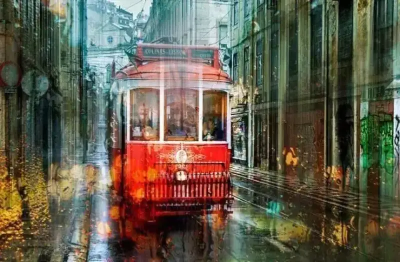
In this series of urban rainy street scenes, pedestrians with umbrellas stroll through. The colors are vivid, the haze is half-hidden, and at a glance you would really think it is an oil painting.
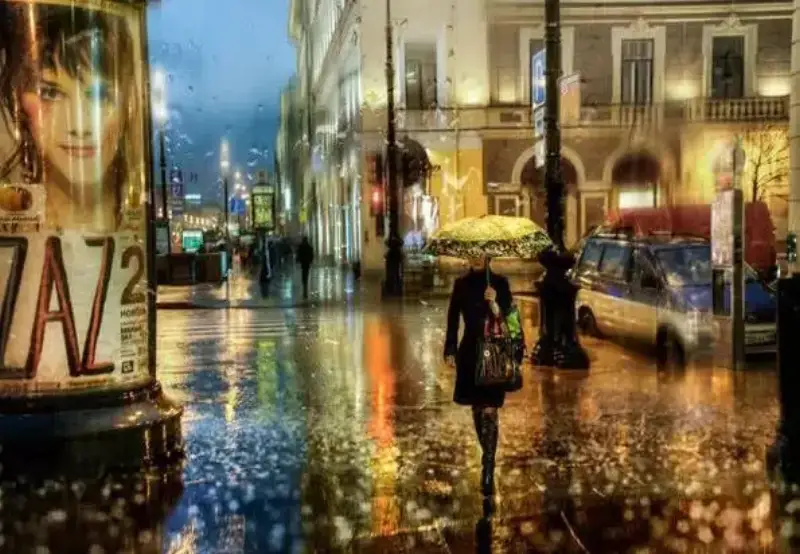
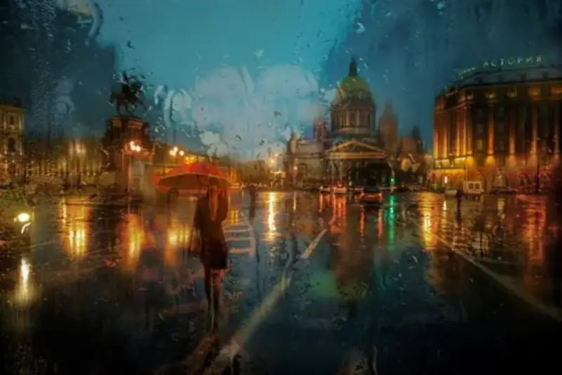
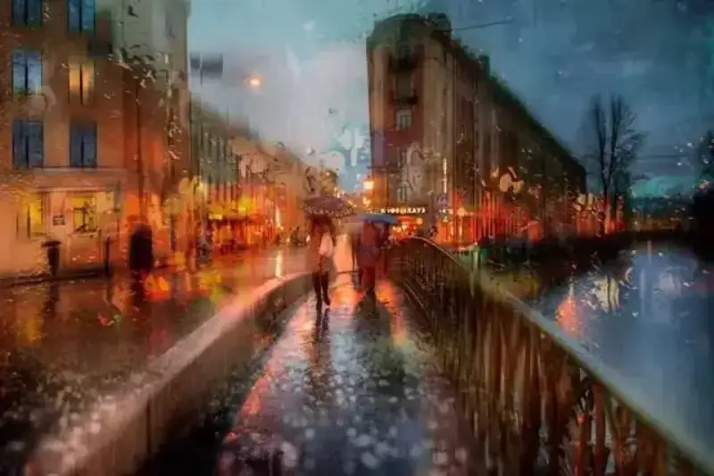
How do you give rain an oil-painting texture?
It is simple. You just need one extra step: make good use of Photoshop. Follow the tutorial closely, and it teaches you hand in hand.
Shooting tips
Step 1: Shoot through a glass window
Focus on color and deliberately blur the people, and the rainy street scene gains a natural filter. If you do not shoot through a window, I will show later how to get this effect in Photoshop.
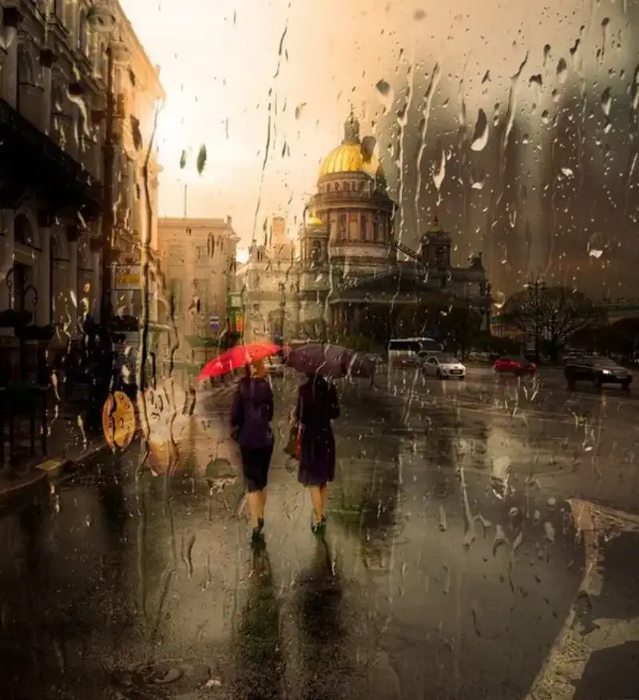
Step 2: Choose the right light and background
The light on a rainy day is not ideal, but at night the reflection of neon lights on the water, plus water marks on the glass, instantly bring the frame to life. Add distinctive European buildings, crossroads, shopping streets, and sidewalks, and it becomes far more dreamy.
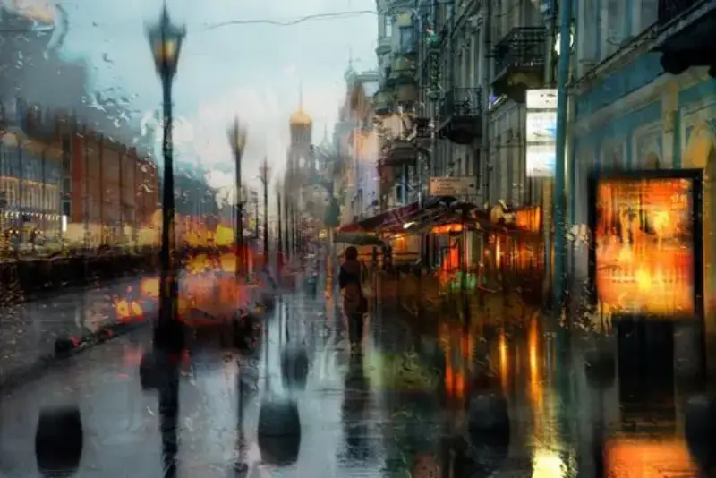
Step 3: The magic of long exposure
Put the camera on a tripod, lengthen the shutter time, and the trails of flowing water are recorded perfectly.
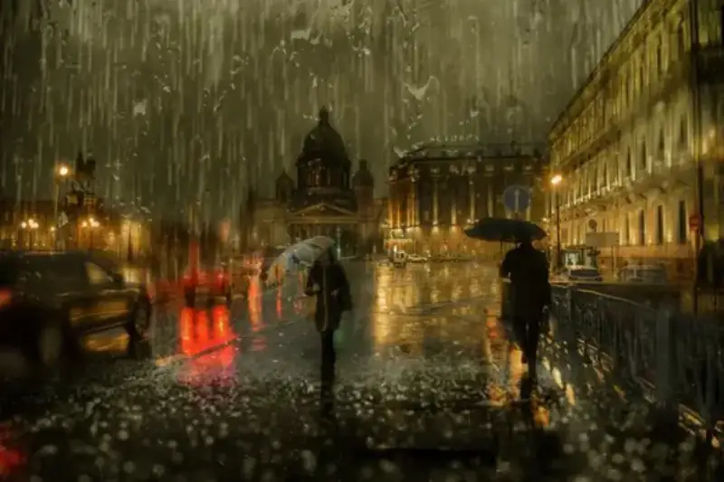
If you want an oil-painting texture, shooting alone is not enough. You must make good use of post.
Oil-painting post-production
If you did not shoot through a glass window,
the final shot may look like this ▼
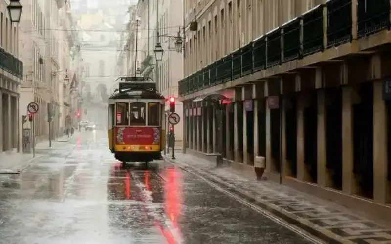
The final Photoshop result ▼
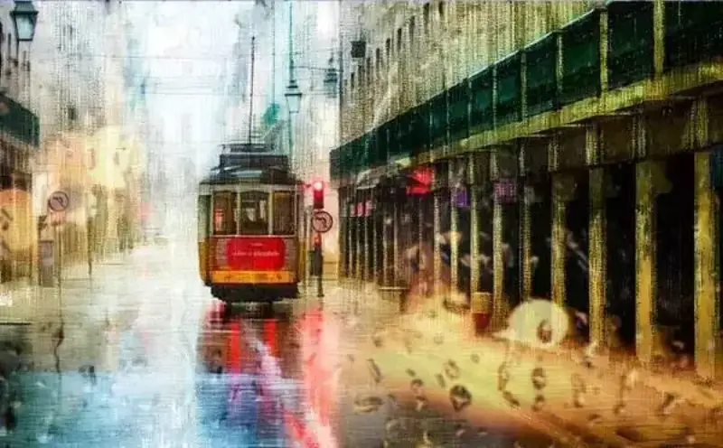
1. Adjust saturation
Adjust the saturation in Lightroom or Photoshop. To make the rainy mood stronger, I made the sky and its reflection colder.
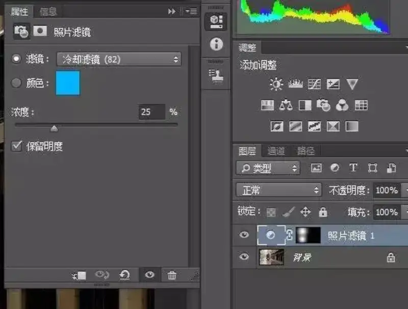
First result ▼
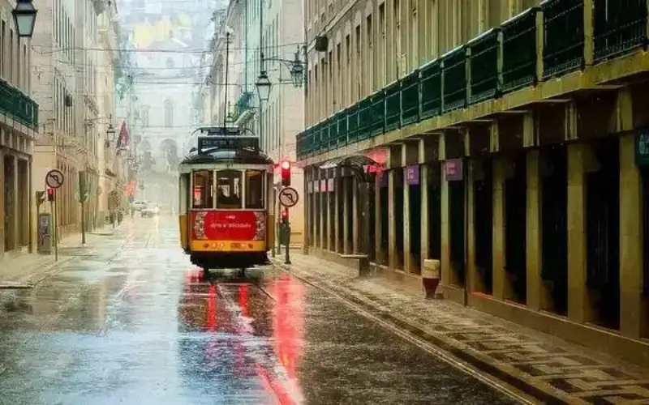
2. Duplicate the layer three times and rotate the canvas 45 degrees
The canvas is rotated 45 degrees to match the direction of the pencil effect in the next step.
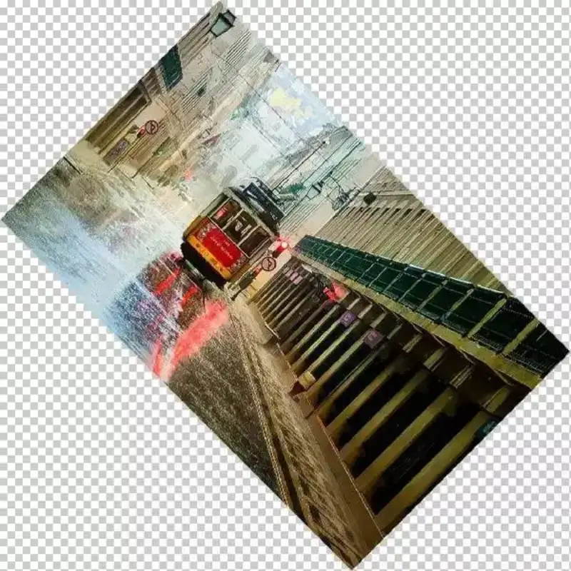

3. Use Colored Pencil
Open the Filter Gallery on one layer, choose Colored Pencil, and use the values below.
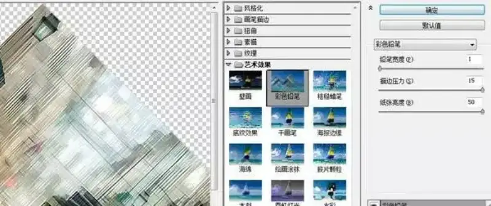
4. Use a mask and Rough Pastels
Use a mask to erase the details of the tram and the road sign, then go back to the Filter Gallery, use Rough Pastels, and rotate the canvas back upright.
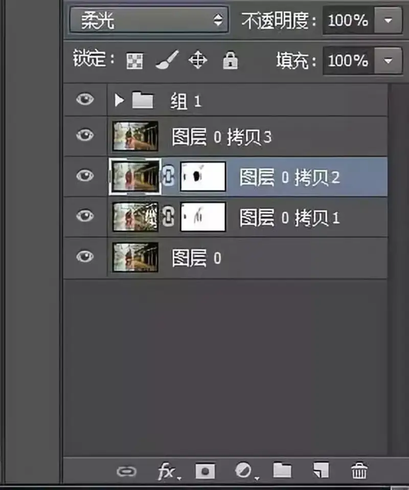
5. Use Motion Blur and Pin Light mode
Set Copy 2 to Motion Blur with Soft Light mode, set Copy 3 to Pin Light, and place it above Copy 1 and Copy 2.
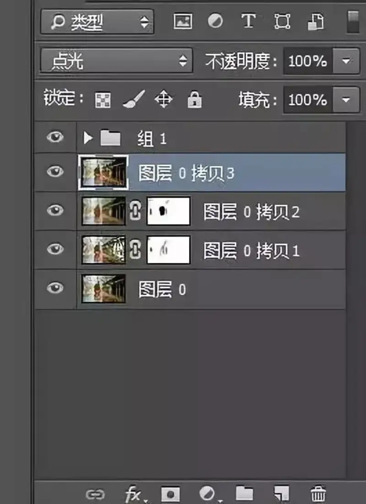
6. Use a mask and Gaussian Blur to make glass bokeh
Then choose a raindrop image with bokeh,
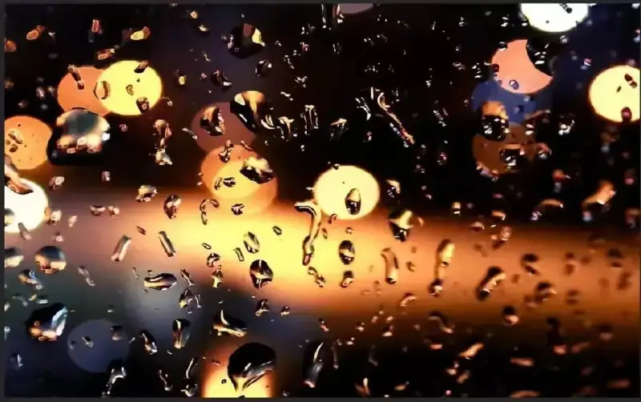
set it to Screen mode, use a mask to cover the black parts, leave only the bokeh, and place it.
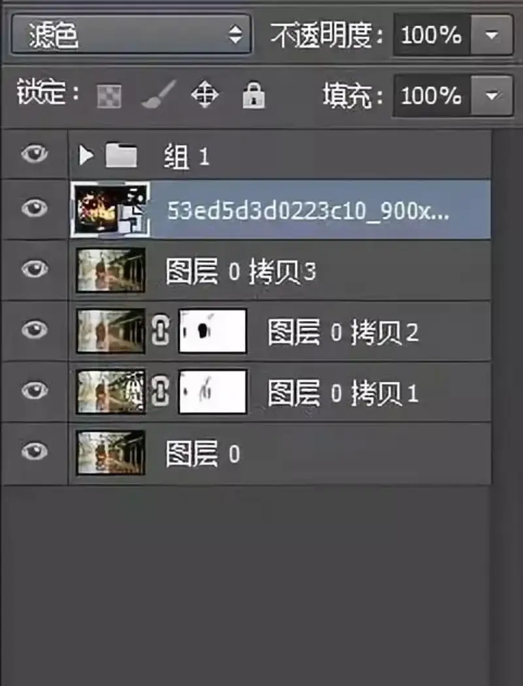
Then choose a light-colored raindrop image,
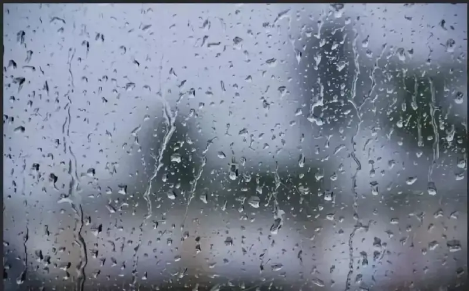
use the white eyedropper in Curves to remove the gray background, set it to Screen mode too, and mask the parts that clash with the previous raindrop image.
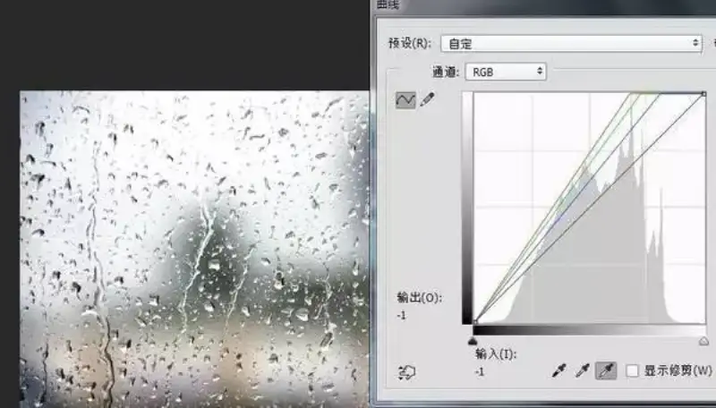
Finally, blur the two raindrop layers a little with Gaussian Blur, and it is done.

See? Is it not simple? Dig out your old photos, or shoot on a rainy day, and try it yourself!
Post tutorial source: designer Zhang Heng.